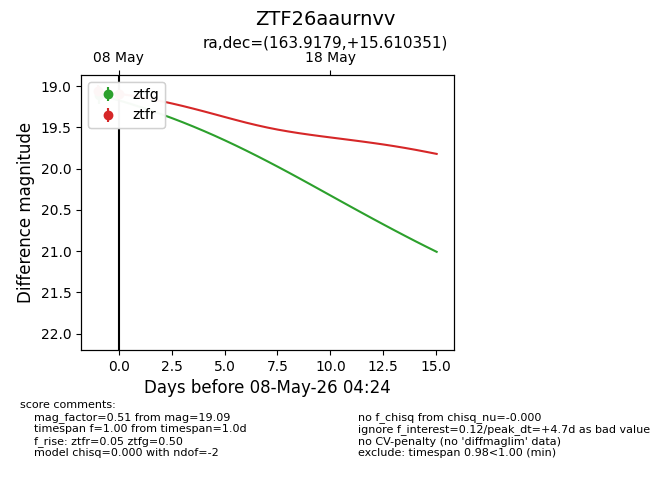
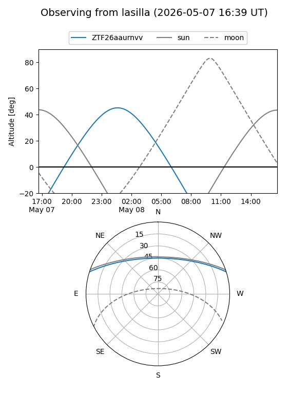
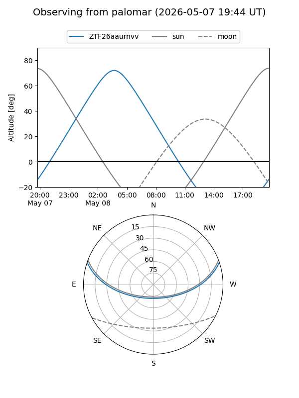
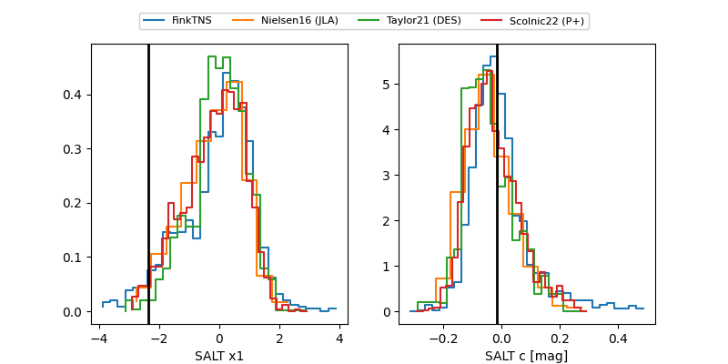

ZTF26aaurnvv
Target ZTF26aaurnvv at 2026-05-08 04:25
Aliases and brokers:
FINK: link
Lasair: link
ALeRCE: link
alt names
ZTF26aaurnvv (ztf,fink_ztf)
Coordinates:
equatorial (ra, dec) = 163.9179,+15.61035
equatorial (HMS+DMS) = 10:55:40.29,+15:36:37.26
galactic (l, b) = (230.1943,+60.78739)
Flags:
Photometry:
last ztfg=19.11, ztfr=19.09
1 ztfg, 2 ztfr detections
Lightcurve

Visibility


Additional plots
